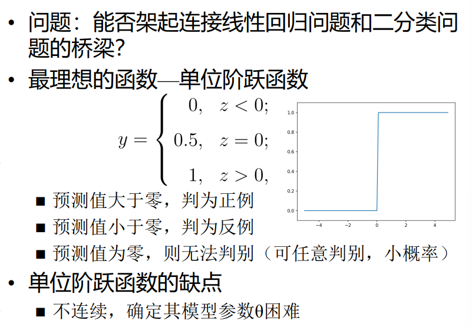
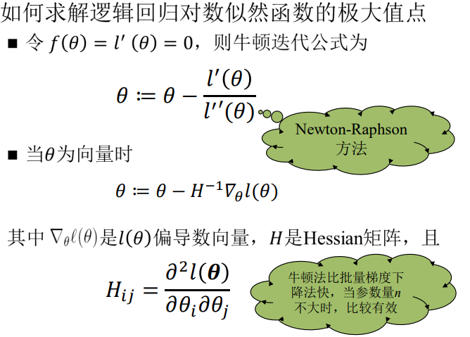
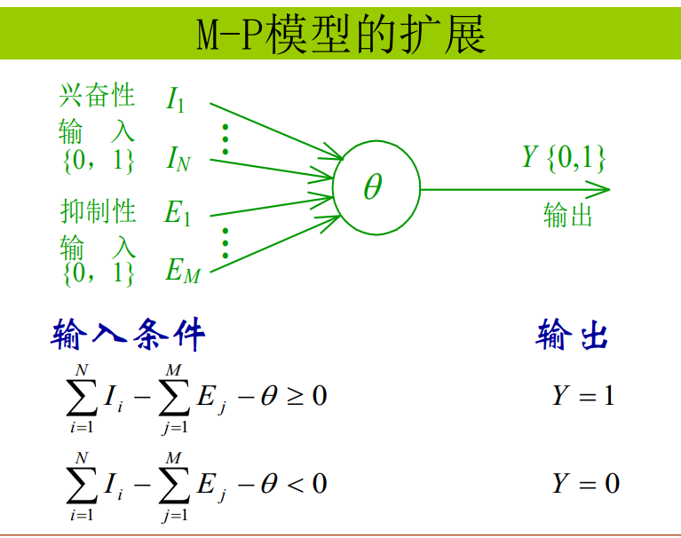
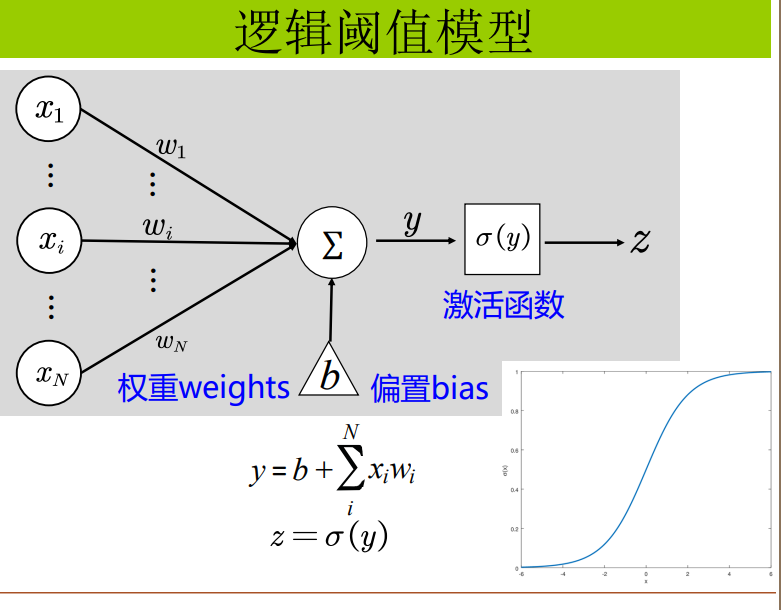
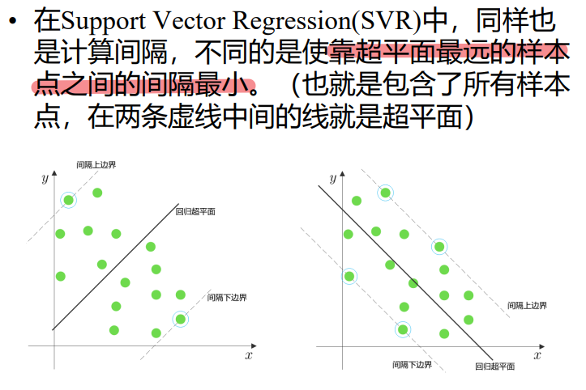
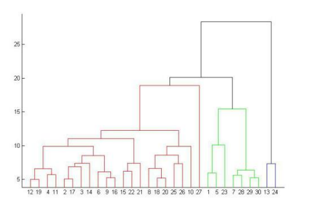

《机器学习B》课程复习笔记
写在前面的话
考试的题型为单项选择，简答，解答和论述四种类型。
我们是第一届考试，一无所知，我随便写写，各位随便看看
推荐看一下b站上吴恩达老师的机器学习
绪论
人工智能&机器学习&深度学习
人工智能是一个让机器具有智能的一个目标;机器学习是实现这一目标的有效方式;深度学习属于机器学习的子集,通过深度神经网络完成机器学习的任务。

机器学习算法分类
- 监督学习：回归、分类
- 无监督学习：聚类、降维
- 半监督学习
- 自监督学习
- 强化学习
有监督学习
有监督学习(supervised learning):从给定的有标注的训练数据集中学习出一个函数(模型参数),当新的数据到来时可以根据这个函数预测结果。常见任务包括分类与回归。
半监督学习
结合（少量的）标注训练数据和（大量的）未标注数据来进行数据的学习
无监督学习
没有标注的训练数据集，需要根据样本间的统计规律对样本集进行分析，常见任务：聚类
自监督学习
自监督学习是无监督学习的一种方式，它的主要目的是在非人工标注的数据中通过自己监督自己来学习到有用的信息。

强化学习
一种计算性的学习方法，agent在与复杂和不确定的环境交互的时，试图使其获得的奖励总量最大化。

强化学习与有监督学习
有监督通过指导学习，强化学习通过判别学习
线性回归
代价函数
如何求解模型$h_\theta(x)=\theta_0+\theta_1x_1+…+\theta_nx_n$ 的参数$\theta$？
我们可以利用代价函数$J(\theta) = \sum_{i=1}^m |h_\theta(x^{(i)})-y^{(i)}|$，使代价函数取得最小值来确定$\theta$的取值，$J(\theta)$叫做绝对误差
那么问题变为：求解 $\theta$使得代价函数取得最小值
为了方便计算，代价函数（损失函数）采用误差平方和的形式:
$$
\arg \min_{\theta} \sum_{i=1}^m (h_\theta(x^{(i)})-y^{(i)})^2
$$
在使用梯度下降法计算时，为了方便计算，损失函数写成如下形式：
$$
J(\theta) = \frac{1}{2}\sum_{i=1}^m (h_\theta(x^{(i)})-y^{(i)})^2
$$
称为平方和误差
线性模型特点
- 形式简单、易于建模
- 可解释性
- 非线性模型的基础
- 引入层级结构或高维映射
系数反映了每个特征对结果的影响强弱
特征规范化
各个特征变量的范围要保持相近，如果差距较大，那么代价函数的等高线图会很扁，梯度下降法需要更多的迭代，因此要将特征的尺度缩放到-1和1之间 $ x_1=(x_1- mean(x_1))/std(x_1) $
最小二乘法求解
最小二乘法（Least Squares Method）是一种常用的数学优化方法，用于找到函数模型的最佳拟合参数，使得预测值与实际数据之间的误差平方和最小。最小二乘法的目标是最小化误差平方和（Sum of Squared Errors, SSE）,在线性回归里误差平法和是上述提到的损失函数：
$$
J(\theta) = \frac{1}{2}\sum_{i=1}^m (h_\theta(x^{(i)})-y^{(i)})^2
$$
求解过程
我们先将$J(\theta)$写成矩阵运算的形式,步骤如下：
$$
h_\theta(x^{(i)})=\theta_0+\theta_1x_1^{(i)}+…+\theta_nx_n^{(i)} =\theta^{T}x^{(i)}=(x^{(i)})^T\theta
$$
$X$是$m\times(n+1)$矩阵，$m$个样本，$n$个特征 (上标表示样本，下标表示特征)（其实是由样本矩阵增广而来）
$$
X=
\left[
\matrix{
(x^{(1)})^T \
(x^{(2)})^T \
\vdots \
(x^{(m)})^T
}
\right]
\left[
\matrix{
1 &x_1^{(1)}&x_2^{(1)}&\cdots&x_n^{(1)} \
1 &x_1^{(2)}&x_2^{(2)}&\cdots&x_n^{(2)}\
1 &x_1^{(3)}&x_2^{(3)}&\cdots&x_n^{(3)} \
\vdots & \vdots& \vdots& \cdots& \vdots\
1 &x_1^{(m)}&x_2^{(m)}&\cdots&x_n^{(m)}
}
\right]
$$
$\theta$是$(n+1)\times1$矩阵:
$$
\theta=
\left[
\matrix{
\theta_0 \
\theta_1 \
\vdots \
\theta_n
}
\right]
$$
$Y$是$m$长向量:$m$个样本
$$
Y=
\left[
\matrix{
y^{(1)} \
y^{(2)} \
\vdots \
y^{(m)}
}
\right]
$$
那么：
$$
J(\theta) = \frac{1}{2}\sum_{i=1}^m (h_\theta(x^{(i)})-y^{(i)})^2=\frac{1}{2}(X\theta-Y)^T(X\theta-Y)
$$
最小化$J(\theta)$:让$J(\theta)$关于$\theta$的偏导数(过程略)为0：
$$
\nabla_{\theta} J(\theta)=\nabla_{\theta}\frac{1}{2}(X^T\theta-Y)^T(X^T\theta-Y)
=X^TX\theta-X^TY\
\text {令}\ X^TX\theta-X^TY=0
\text{则}\ X^TX\theta=X^TY \
\theta = (X^TX)^{-1}X^TY \
$$
前提：$X^TX$可逆
梯度下降法
最小优化问题$\min J(\theta)$ ： $\theta _j:=\theta _j - \alpha \frac{1}{\theta_j}J(\theta) $
最大优化问题$\max J(\theta)$ ： $\theta _j:=\theta _j + \alpha \frac{1}{\theta_j}J(\theta) $
$\alpha$称为学习率
梯度方向是函数在该点变化最快的方向

线性回归应用梯度下降法：
$$
\min J(\theta) = \frac{1}{2}\sum_{i=1}^m (h_\theta(x^{(i)})-y^{(i)})^2
$$
逐个更新全部的$\theta$：
$$
\theta _j:=\theta j - \alpha \frac{1}{\theta_j}J(\theta)
$$
假定我们只有一个训练样本，那么：
$$
J(\theta) = \frac{1}{2} (h\theta(x)-y)^2 \
\theta _j:=\theta j - \alpha (h\theta(x)-y)x_j\text{其中$0<=j<=$n}
$$
这就是：LMS学习规则
LMS学习规则的性质：
参数更新量的模长正比于回归误差，即$|h_\theta(x)-y|$
让我们推广到多个样本就，就会有两种策略：
- **Batch gradient descent (BGD)：**对于参数$\theta_j$扫描计算全部的样本再进行更新
$$
\theta j:=\theta j + \alpha \sum{i=1}^m (y^{(i)}-h\theta(x^{(i)}))x_j^{(i)} \text{for every j}
$$
- **Stochastic gradient descent (SGD):**对于参数$\theta_j$遇到一个样本就进行更新
$\text{for i=1 to m}\ $
$$
\theta _j:=\theta j + \alpha (y^{(i)}-h\theta(x^{(i)}))x_j^{(i)} \text{(for every j)}
$$
BGD与SGD对比:
- BGD 扫描整个训练集后再更新参数
- SGD 遇到一个样本后立即更新参数
- 对于大样本问题，BGD收敛较慢
- 但SGD有可能发生震荡，而无法收敛到极小值
还有一种方法：
mini-batch梯度下降：如果不是每拿到一个样本即更改梯度，而是若干个样本的平均梯度作为更新方向 ，则是 mini-batch梯度下降算法

梯度下降法其他讨论
梯度下降法不能保证一定能获得全局极小值，~~一方面是因为不一定存在全局极小值，另一方面是容易陷入局部极小值，~~这就引申出了不同的策略解决这个问题

我们先看线性回归如何保证存在全局极小值：
学习率与梯度下降
介绍一下学习率对梯度下降法的影响：
学习率：向代价函数下降程度最大的方向迈出一小步的步长
学习率的选择：
- 学习率α过小，达到收敛所需的迭代次数高；
- 学习率α过大，每次迭代可能会越过极小值，导致无法收敛。
应对措施：
- 尝试不同的学习率
- 使用不同的动态学习率算法 Adagrad 、 RMSProp
梯度下降法与正规方程法的 比较：
线性回归的概率解释
对于给定的$y^{(i)}$总能找到 使得等式成立

局部加权线性回归
局部加权线性回归（Locally Weighted Linear Regression, LWLR）是一种非参数化的回归方法，它通过赋予每个样本不同的权重来拟合一组局部的线性模型，从而在全局非线性回归问题中体现局部线性关系。它的主要特点是对每个预测点进行局部拟合，而不是使用全局模型。
局部加权线性回归的主要思想是，在拟合点 x 附近的样本对模型的贡献更大，而远离 x的样本贡献较小。因此，每个样本点会被赋予一个权重，权重由与预测点 x 的距离决定。


非线性模型的多元回归
实际的数据可能不适用线性预测模型


其他讨论
样本离群点
欠拟合与过拟合
处理过拟合方式——正则化
正则化（Regularization）是机器学习中一种防止模型过拟合的技术，它通过对模型参数施加约束或惩罚，降低模型复杂度，从而提高其对新数据的泛化能力。
线性正则化的方法有 岭回归 LASSO回归
处理方式——特征选择
逻辑回归
逻辑回归 = 线性回归 + sigmoid函数
逻辑回归是用来解决分类问题的
若 y={1，2，3，…,M}，则称此问题为 M分类问题
- 通常处理的都是二分类问题
- 多分类问题常被转化为多个二分类问题
- 生活中常见的分类应用： 人脸识别 ，指纹识别 ，手写体数字识别 ， 垃圾邮件检测
用回归来解决分类问题，即做出一条线将样本分成两堆，这条线称为决策边界
回归模型的输出是实数，可能为负值，也可能远远大于1。但在分类问题中，我们通常需要预测某事件的概率，而概率的范围是 $[0,1]$。因此，需要一个函数来对回归的结果进行变换。
函数一：单位阶跃函数

由于阶跃函数的不连续的特性，因此计算困难，确定模型参数也困难
硬分类与软分类
函数二：Sigmoid 函数（Logistic函数）
即：
$$
g(z)= \frac{1}{1+e^{-z}}\
z=\theta^{T}x=\theta_0+\sum_{j=1}^n\theta_jx_j
$$
我们将回归得到的输出带入Sigmoid函数的输入中
$$
h_\theta(x)=g(\theta^Tx)=\frac{1}{1+e^{-\theta^Tx}}
$$
通过上述操作，我们将线性回归输出值$y$的取值范围从$R$映射到区间$[0,1]$中，并且$h_\theta(x)$的值代表概率，这就是软分类
那么我们以二分类为例：
$$
P(y=1|x;\theta)=h_\theta(x)\
P(y=0|x;\theta)=1-h_\theta(x)\
$$
上述两式可以合并为：
$$
P(y|x;\theta) = (h_\theta(x))^y(1-h_\theta(x))^{1-y}
$$
如果采用Sigmoid函数那么上式可以写为：
$$
P(y=1|x;\theta)=h_\theta(x) = \frac{1}{1+e^{-\theta^Tx}}\
P(y=0|x;\theta)=1-h_\theta(x) = \frac{e^{-\theta^Tx}}{1+e^{-\theta^Tx}}\
$$
Odds(几率 几率比)
在统计和概率理论中，一个事件或者一个陈述的发生比是该事件发生和不发生的比率，又称几率、几率 比，公式为：
$$
\frac{p}{1-p}
$$
其中，$p$是该事件或陈述的概率
几率比其实是一种相对概率。 一般来说，日常不太使用几率比来描述概率。
在二分类问题中，正样本的几率比就是：
$$
\frac{P(y=1|x;\theta)}{1-P(y=1|x;\theta)}=\frac{1}{e^{-\theta^Tx}}
$$
取对数就得到：
$$
\ln\frac{P(y=1|x;\theta)}{1-P(y=1|x;\theta)}=\ln\frac{1}{e^{-\theta^Tx}}=\theta^Tx
$$
似然函数
似然函数（Likelihood Function） 是统计学中用来衡量模型参数对观测数据的解释能力的函数。在逻辑回归中，我们通过最大化似然函数来找到最优的模型参数。
似然与概率的区别
- 概率描述了已知参数时的随机变量的输出结果；
- 似然则用来描述已知随机变量输出结果时，未知参数的可能取值。
例如，对于“一枚正反对称的硬币上抛十次”这种事件，我们可以问硬币落地时十次都是正面向上的“概率”是多少；而对于“一枚硬币上抛十次 ”，我们则可以问，这枚硬币正反面对称的“似然”程度是多少。 区别似然和概率的直接方法为，“XXX的概率"中XXX只能是事件，也就是 ，事件(发生)的概率是多少；而“XXX的似然"中的XXX只能是参数，比如说 ，参数等于某个值时的似然是多少。
似然与概率的联系
似然函数的定义：关于参数$\theta$的似然函数（在数值上）等于给定参数$\theta$后变量 data 的概率（两者的相等并不是说两个函数是同一个，只是数值上的相等）：
$$
L(\theta|data)=P(data|\theta)=\prod_{i=1}^{N}P(x_i|\theta)\
data = (x_1,x_2,\cdots,x_n)
$$
似然函数的主要用法在于比较它相对取值，虽然这个数值本身不具备任何含义。例如，考虑一组样本，当其输出固定时，这组样本的某个未知参数往往会倾向于等于某个特定值，而不是随便的其他数，此时，似然函数是最大化的。 似然函数乘以一个正的常数之后仍然是似然函数，其取值并不需要满足归一化条件,即
$$
\sum_{x}\alpha \cdot L(\theta|x)\neq1,\alpha> 0
$$
最大似然估计
最大似然估计是似然函数最初也是最自然的应用。似然函数取得最大值表示相应的参数能够使得统计模型最为合理。从这样一个想法出发，最大似然估计的做法是：首先选取似然函数（一般是概率密度函数或概率质量函数）， 整理之后求最大值。实际应用中一般会取似然函数的对数作为求最大值的函数，这样求出的最大值和直接求最大值得到的结果是相同的。似然函数的最大值不一定唯一，也不一定存在。
应用到逻辑回归
假设有$m$个互相独立的训练样本
$$
&\max_\theta L(\theta)=p(\vec{y}|X;\theta)\
&=\prod_{i=1}^{m}p(y^{(i)}|x^{(i)};\theta)\
&=\prod_{i=1}^{m}(h_\theta(x^{(i)}))^{y^{(i)}}(1-h_\theta(x^{(i)}))^{1-y^{(i)}}\
$$
上式即为最大化似然目标函数
一般取对数进行计算：
上式为最大化对数似然目标函数
最大化对数似然目标函数求解方法
梯度下降
由于是最大化，所以符号会有变化
牛顿法求解对数似然函数的极大值点
牛顿法可以求解$f(x)=0$的问题，应用到极大值点问题，即可变成：

多分类问题
解决方法：
One-vs-Rest:
转化为多个二分类问题
- 对于一个 K-类分类问题，训练 K 个二分类器，每个分类器负责区分一个类别与其他所有类别。
- 具体而言，第 k 个分类器的目标是预测样本是否属于第 k 类
One-vs-One：
- 对于一个 K-类分类问题，训练 C(K,2)个二分类器，每个分类器负责区分两类之间的关系。
- 每个分类器针对类别 i 和类别 j 构建，训练数据只包含类别 i 和类别 j 的样本。
softmax回归
虽然前两种方法是将多分类问题转化为二分类问题，但对于多分类问题，也可以直接使用 Softmax 回归进行建模

模型评估方法和性能评价指标
人工神经网络
定义
美国神经网络学者Nielsen的定义：
- 人工神经网络是一个并行、分布处理结构，它由处理单元及其称为联接的无向讯号通道互连而成。
- 这些处理单元具有局部内存，可以完成局部操作，即它必须仅仅依赖于处理单元接收的所有输入信号的当前值 和存储在处理单元局部内存中的值。
- 每个处理单元有一个单一的输出联接， 输出信号通过必要的数学模型给出。
特点
-
并行结构和并行处理
-
知识的分布存储
-
在神经网络中，知识不是存储在特定的存储单元，而是 分布在整个系统中，要存储多个知识就需要很多连接。
-
要获得存储的知识则采用“联想”的办法，这类似于人类和动物的记忆。
-
联想记忆的两个主要特点： ✓存储大量复杂数据的能力 ✓自适应的特征抽取能力 ✓快速的推理能力
-
自适应性
-
容错性
人工神经元的形式化模型
M-P模型

线性加权模型
阶跃阈值模型
逻辑阈值模型

广义神经元模型
神经元状态转移函数的类型
感知器模型和学习规则
定义
感知器是解决 线性可分问题 的一种算法基础，它是现代神经网络的重要前身。
线性可分：在二维空间上，如果两类点可以被一条直线（高维空间叫超平面）完全分开叫做线性可分。
损失函数
感知器的收敛性
收敛性的核心内容
- 适用条件
- 数据必须是 线性可分的。也就是说，存在一个超平面可以将所有正类和负类样本完全分开。
- 收敛性保证
- 如果数据线性可分，感知机算法一定会在有限次迭代后找到一个权重向量 w，使得所有训练样本的分类正确。
- 收敛时间
- 收敛所需的迭代次数取决于数据的分布，例如样本之间的距离和数据的分离度。
表征能力
多层前馈网络与BP学习算法
名称“前馈”源于数据流动的方式：输入数据通过网络从输入层流向输出层，中间没有反馈或循环。
单层前馈神经网络
BP学习算法（Backpropagation Learning Algorithm）
BP（反向传播）学习算法是神经网络训练中的核心算法之一，广泛应用于前馈神经网络（尤其是多层感知器）。其主要作用是通过计算损失函数相对于网络参数（权重和偏置）的梯度，并通过梯度下降法来优化这些参数，以最小化预测误差。BP算法是深度学习中的一个基础和重要算法。
总体思想：正向传播 + 反向传播(1986年)
- 正向传播时，输入信息从输入层开始，经过各层神 经元的处理后产生一个输出。然后，将实际输出和 所需输出进行比较，得到一个误差矢量。
- 反向传播过程，从输出层至输入层，利用这个误差矢量对权值进行逐层修正。
- 正向传播和反向传播交替迭代进行。
- 通过不断迭代优化，使得网络的输出逐渐接近目标 值，从而实现对输入数据的准确识别或预测。
1. 反向传播算法的工作原理
反向传播算法的核心思想是通过链式法则来计算损失函数关于网络中各个参数（即权重和偏置）的梯度，并利用这些梯度来更新参数。其步骤如下：
1.1 向前传播（Forward Propagation）
- 输入数据通过网络的各层进行传播，最终输出预测值。
- 每一层的神经元进行加权求和并通过激活函数处理，得到该层的输出。
1.2 计算损失（Loss Calculation）
- 使用损失函数计算网络输出与实际目标之间的误差。
- 常用的损失函数：
- 均方误差（MSE）用于回归问题： ${MSE} = \frac{1}{n} \sum_{i=1}^{n} (y_i - \hat{y}_i)^2$
- 交叉熵损失（Cross-Entropy Loss）用于分类问题。
1.3 反向传播（Backpropagation）
反向传播的关键： 通过链式法则计算损失函数相对于各层权重和偏置的梯度。
从输出层开始，计算损失函数相对于输出层的梯度：
$\frac{\partial L}{\partial z^{(L)}} = \hat{y} - y$
其中，$z^{(L)} $是输出层的加权和，$\hat{y} $是预测值，$y$是真实标签，$L$是损失函数。
然后通过链式法则逐层计算前面隐藏层的梯度：
$\frac{\partial L}{\partial z^{(l)}} = \left( \frac{\partial L}{\partial z^{(l+1)}} \right) \cdot W^{(l+1)} \cdot f’(z^{(l)})$
其中$ f’(z^{(l)}) $是该层激活函数的导数，$W^{(l+1)}$ 是上一层的权重矩阵。
1.4 参数更新（Parameter Update）
通过计算得到的梯度更新网络中的权重和偏置，通常采用梯度下降法： $w^{(l)} = w^{(l)} - \eta \frac{\partial L}{\partial w^{(l)}} \b^{(l)} = b^{(l)} - \eta \frac{\partial L}{\partial b^{(l)}} $
其中，$\eta $是学习率，控制每次更新的步长。
1.5 重复迭代
- 通过多次迭代（多个epoch）来不断更新权重和偏置，直到损失函数收敛或达到设定的训练次数。
神经网络训练技巧
批处理BP算法
1 在每次更新权值之前，计算所有样本的误差
-
真正的最速梯度下降方法
-
每代更新一次
2 每计算一个样本点的误差就更新权值一 次
- 需将数据每个循环随机打乱
动态学习率
动量项
动量项是深度学习中的一个优化技术，常用于梯度下降算法中，目的是加速收敛并帮助模型避免陷入局部最小值或鞍点。它的核心思想借鉴了物理学中“动量”的概念，即当前的更新不仅依赖于当前的梯度，还考虑了之前的梯度变化，形成一定的惯性，帮助在优化过程中保持稳定的前进方向。
Dropout
Dropout 是一种在训练神经网络时使用的正则化技术，用于防止过拟合。它通过在每次训练过程中随机地“丢弃”神经网络中的一些神经元，使得网络在每次前向传播时都只使用部分神经元进行计算，从而减少对某些神经元的依赖，增强模型的泛化能力。
径向基函数与自组织特征映射神经网络
神经网络的典型应用：
- 分类问题
- 函数逼近（回归问题）
- 时间序列分析
径向基函数
径向基函数（Radial Basis Function，简称RBF）是一类广泛应用于机器学习、函数逼近和神经网络中的数学函数。它的特点是以某个中心点为基准，随着距离中心点的增加，函数值逐渐衰减。通常，RBF是以距离的平方为自变量的函数。常见的径向基函数有高斯函数、逆多项式函数等。
径向基函数是一个它的值(y)只依赖于变 量(x)距原点距离的函数，即 𝜙(𝑋) = 𝜙( ||𝑋|| ) 也可以是距其他某个中心点的距离，即 𝜙(𝑋) = 𝜙( ||𝑋 − 𝑐|| ) 任一满足𝜙(𝑋) = 𝜙( ||𝑋 − 𝑐|| )的函数都可 称作径向函数。其中，范数一般为欧几里得距离，不过亦可使用其他距离函数
径向函数𝜙(𝑋) = 𝜙( ||𝑋 − 𝑐|| )包含三个参 数：
- 中心：𝑐;
- 距离度量： 𝑟 = || 𝑋 − 𝑐 ||
- 形状：𝜙
常见的径向基函数
径向基神经网络
径向基函数网络是一种以径向基函数作为激活函数的 人工神经网络。
- 网络的输出是输入和神经元参数的径向基函数的线性组合，能够以任意精度逼近任意连续函数。
- 径向基函数网络有许多用途，包括函数逼近、时间序 列预测、分类和系统控制。
- 一个隐层：激活函数为径向函数，例如，高斯函数.
- 神经元的输入离该中心点越远，神经元的激活程度就越低。隐节点的这一特性常被称为“局部特性”。
RBF网络与经典神经网络的区别
隐藏层不同：RBF网络隐藏层每个节点执行一个径向基函数操作，产生与输入数据的距离相关的输出。 经典神经网络采用进行加权和非线性变换。
输出层相同：均为线性组合
完全径向基神经网络
以插值问题为例：
插值问题描述: 考虑N维空间到一维空间的映射.
设N维空间有𝑃个输入向量$𝒙_𝑝, 𝑝 = 1,2, … , 𝑃$它们 在输入空间相应的目标值为$𝑑_𝑝, 𝑝 = 1,2, … , 𝑃$ 插值的目的是寻找一个非线性映射函数$F(𝒙)$,使得满足下述插值条件 $F(𝒙_𝑝) = 𝑑_𝑝, 𝑝 = 1,2, … , P$
解决方法：
存在的问题：
完全内插存在的问题(正则化RBF网络):
- 经过所有训练数据点,当存在噪声时,泛化能力差
- 径向基函数数目与训练样本数相同,当训练样本数远远大于系统的固有自由度时,问题是超定的, 插值矩阵求逆容易不稳定
广义径向基神经网络
- 径向基函数数目M与训练样本数P不同,且一般M<<P
- 径向基函数的中心不再限制在数据点上,由训练确定
- 各径向基函数的扩展常数不再统一,由训练确定
- 输出函数的线性中包含阈值参数,用于补偿函数在样本集上的平均值与目标之平均值之间的差别
广义径向基神经网络与多层感知器比较
RBFN用于分类
自组织特征映射神经网络
SOFM网络的核心思想是保持输入数据的拓扑结构，使得相似的数据点在映射空间中尽量接近，而不相似的数据点则远离。
自组织映射(SOM)或自组织特征映射(SOFM)由Kohonen 教授于1981年提出，是一种无监督机器学习技术，用于 生成高维数据集的低维(通常是二维)表示，同时保留数据 的拓扑结构。
不同于一般神经网络基于损失函数的反向传递来训练 ，它运用竞争学习(competitive learning)策略,依靠神经元 之间互相竞争逐步优化网络。且使用近邻关系函数 (neighborhood function)来维持输入空间的拓扑结构

支持向量机
二类分类模型。它的基本模型是定义在特征空间上的间隔最大的线性分类器，间隔最大使它有别于感知机。
支持向量机还包括核技巧，这使它成为实质上的非线性分类器。
支持向量机的学习策略就是间隔最大化，可形式化为一个求解凸二次规划(convex quadratic programming)的问题，也等价于正则化的Hinge 损失函数的最小化问题。支持向量机的学习算法是求解凸二次规划的最优化算法。
分类：
- 线性可分支持向量机(linear support vector machine in linearly separable case )：硬间隔最大化(hard margin maximization)；
- 线性支持向量机(linear support vector machine) ：训练数据近似线性可分时，通过软间隔最大化(soft margin maximization)；
- 非线性支持向量机(non-linear support vector machine) ：当训练数据线性不可分时，通过使用核技巧(kernel trick)及软间隔最大化。
核函数
当输入空间为欧氏空间或离散集合、特征空间为希尔伯特空间时，核函数(kernel function)表 示将输入从输入空间映射到特征空间得到的特征向量之间的内积；
通过使用核函数可以学习非线性支持向量机,等价于隐式地在高维的特征空间中学习线性支持向量机，这样的方法称为核技巧；
核方法(kernel method)是比支持向量机更为一般的机器学习方法。
理论基础
统计学习理论是SVM的理论基础
线性可分支持向量机
线性可分:
设$D_0$和$D_1$是n维欧氏空间中的两个点集,如果存在n维向量$w$和实数$b$,使得:
1.所有属于$D_0$的点$x_i$都有$wx_i+b>0$2.而对于所有属于$D_1$的点$x_j$则有$wx_j+b<0$,则我们称$D_0$和$D_1$线性可分
3.从二维扩展到多维空间中时,将$D_0$和$D_1$完全正确地划分开的$wx+b=0$就成了一个超平面。
法向量指向的一侧为正类，另一侧为负类
一般地,当训练数据集线性可分时,存在无穷个分离超平面可将两类数据正确分开，感知机利用误分类最小的策略,求得分离超平面,不过这时的解有无穷多个.线性可分支持向量机利用间隔最大化求最优分离超平面,这时,解是唯一的.
我们希望找到间隔最大化（硬间隔最大化）的超平面，即最大化离分类平面最近的点的距离
已知点到平面的距离公式：
支持向量机的优化算法
若数据是线性可分的，则上述凸二次规划问题的解存在且唯一。二次规划问题有很多算法可以求解，也有很多求解器能直接解决二次规划问题。但是一般我们不直接求解原问题，而是求解其对偶问题，
原因有几点：
- 对偶问题更简单，更容易求解，效率更高；
- 对偶问题将原始问题中的不等式约束转为了对偶问题中的等式约束；
- 对偶问题方便核函数的引入，进而可以推广到非线性分类问题
求解线性可分支持向量机的步骤为：
- 利用拉格朗日乘子法，构造拉格朗日函数；
- 利用强对偶性(KKT条件)将优化问题进行转化， 并求解；
- 利用最优的$𝑤^∗$和$𝑏^∗$构建分类器
第一步：构造拉格朗日函数
第二步：利用强对偶性(KKT条件)将优化问题进行转化
。。。。。。。
线性支持向量机
软间隔最大化
非线性支持向量机
核方法
回归问题

聚类
聚类（Clustering）是最常见的无监督学习算法，它指的是按照某个特定标准（如距离）把一个数据集分割成不同的类或簇，使得同一个簇内的数据对象的相似性尽可能大，同时不在同一个簇中的数据对象的差异性也尽可能地大。
问题描述
聚类分析要解决的问题:
- 定义数据间的距离/相似度度量
- 使用相应的算法对数据集进行分割
- 度量聚类结果的性能
数据间的距离/相似度度量
每一条数据都可以理解为多维空间中的一个点可以根据点和点之间的距离来评价数据间的相似度。
常见的指标:
闵可夫斯基距离/欧式距离
余弦相似度与相关系数
$x_{i,k}$表示向量$\mathbf{x}_{i}$在第$k$维的分量
余弦相似度(样本相关系数)是用来衡量两个向量在方向上的相似度，而不考虑它们的大小（模）。
样本相关系数
类型
聚类主要类型 :
- 划分聚类（K-means、K-medoids等）
- 层次聚类（凝聚法、分裂法）
- 密度聚类（DBScan、 基于密度峰值算法）
- 网格法（STING、CLIQUE）
- 模型法（概率模型：高斯混合模型Gaussian Mixture Models ；神经网络模型:SOM；吸引子传播算法： AP聚类）
- 谱聚类
基于划分的聚类
给定包含N个点的数据集，划分法将构造K个分组，每个分组代表一个聚类，这里每个分组至少包含一个数据点，每个数据点属于且仅属于 一个分组。
例如:K-means K-medoids
K-means算法
K-means聚类，也称为K-平均或K-均值聚类
K：是最终簇数量（即：K 往往代表类别的个数）， 它是超参数，需要预先设定
means：在算法计算中会涉及到求均值
[算法流程]
- 随机选择 K 个簇中心点（可以选已有的数据作为中心点，也可直接选高维空间中的位置）
- 样本被分配到离其最近的中心点
- K 个簇中心点根据所在簇样本，以求平均值的方式重新计算
- 开始迭代，重复第2步和第3步直到所有样本的分配不再改变
[损失函数]
[K-means算法 K 的选择-----肘部法]
目标：找到最合适的点——拐）
找到一个聚类数目，使得K高于该值之后的损失变换会发生显著递减,这个 K 值，称为肘部点（elbow point），因为它看起来像一个人的肘部。
[总结]
优点：
- 是解决聚类问题的一种经典算法，简单、快速
- 对处理大数据集，该算法保持可伸缩性和高效率
- 当结果簇是密集的，它的效果较好
缺点:
- 只适合对数值型数据聚类
- 必须事先给出k（要生成的簇的数目），而且对初值敏感， 对于不同的初始值，可能会导致不同结果。
- 不适合于发现非凸面形状的簇或者大小差别很大的簇
- 对噪声和孤立点数据敏感
常常结合其他聚类算法使用
[改进算法]
基于层次的聚类
将给定数据集进行逐层分解，直到满足某种条件为止
具体可分为自底向上和自顶向下两种方案。
- 凝聚法
- 分裂法

层次聚类法
层次聚类法 (Hierarchical clustering, 也称系统聚类法)
层次聚类法需要度量样本点之间的距离 (dissimilarity) 和 类与类之间的联接 (linkage) 程度
层次聚类法包括两种:
- 聚合方法(agglomerative hierarchical method)(自下而上)
- 分裂方法(divisive hierarchical method) (自上而下)
[树状图]
层次聚类的结果常常使用树状图(dendrogram)来表示.
-
每个节点表示一个类
-
每个叶子节点表示一个独点(只含一个样本点的类).
-
根节点是包含了所有样本点的类
-
每个中间节点有两个子节点,表示其通过合并这两个子类而来
-
当叶子节点调整到高度0时候,则每个中间节点的高度与其两个子节点间的相异度大小成比例
-
在合适的高度上对树进行切割得到聚类结果,上图的虚线切割成了7类
[算法过程]
- 输入所有样本点,每个点为一个类
- 计算相异度(距离)矩阵($d_{ij}$)
- 合并最小链接(linkage)的两个类
- 计算新的类和其他所有类之间链接大小
- 重复3-4,直至所有类合并为一个类或者满足停止条件
- 输出树状图,切割树状图得到聚类结果
聚合聚类方法较分裂式聚类方法更常用,分裂方法由于难以指定合适分裂方法而不太常用.
[类间联系程度度量]
Single linkage单链法
两个簇中最小的两个点之间的距离。
计算公式:$D(I,J)=\min_{i\in I,j \in J} {d_{ij}}$
Single linkage 下的类有串链特点. 合并两个类时只看它们最近的点而不管其他点,聚出的类呈现链状. 因此适合于条形甚至S 形的类. 其聚类结果对相异度的单调变换不变.

[层次聚类法的特点]
基于密度的聚类
密度聚类也称为“基于密度的聚类” (density-based clustering)。指导思想是，只要样本点的密度大于某阈值，则将该样本添加到最近的簇中。
可发现任意形状的聚类， 且对噪声数据不敏感。但计算密度单元的计算复杂度大，需要建立空间索引来降低计算量。
不依赖于距离，而是依赖于密度，从而克服基 于距离的算法只能发现“球形”聚簇的缺点。只要一个区域中点的密度大于某个阈值，就把它加到与之相近的聚类中去。
如: DBScan,基于密度峰值算法
DBSCAN算法
核心思想：将簇定义为密度相连的点的最大集合，能够把具有高密度的区域划分为簇。
密度直达、密度可达、密度相连的两个点属于同一个 聚类；非密度相连的两个点属于不同的聚类簇，或者 其中存在噪声点。
[算法步骤]
通过检查数据集中每个对象的ε 邻域来寻找聚类
具体步骤如下：
- 如果一个点p 的$\epsilon$邻域中大于m个对象，则创建一个p 为核心对象的新簇
- 依据p 来反复寻找密度相连的集合（有可能合并原有已经生成的簇）
- 当没有任何新的点可以被添加到簇中的时候，寻找结束。
基于模型的聚类
给每一个聚类假定一个模型，然后去寻找能很好的拟合模型的数据集,模型可能是数据点在空间中的密度分布函数或者其它。 数据集是由一系列的潜在概率分布生成的。
如:GMM,SOM,AP
吸引子传播算法(AP聚类)
吸引子传播(Affinity propagation)算法基本思想：通过在不同点之间不断的传递信息（吸引度(responsibility)和归属 度(availability) ），从而最终选出聚类中心，完成聚类。
基于网格的聚类
将数据空间划分成有限个单元的网格结构，所有的处理都是以单个的单元为对象。
如:STING,CLIQUE